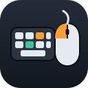

Free · runs in your browser · nothing is recorded
For a rollover (ghosting) test, hold down as many keys as you can. Keys that never light up while others are held are being blocked by the keyboard. Some keys (Win, Fn, media keys, PrtSc on Windows) are handled by the system and may not reach the browser.
| Left | 0 |
| Middle (wheel) | 0 |
| Right | 0 |
| Back (side) | 0 |
| Forward (side) | 0 |
| Scroll up | 0 |
| Scroll down | 0 |
| Tilt left / right | 0 / 0 |
A button turns red when it registers two presses less than 60 ms apart. That usually means a worn switch that double-clicks by itself.
A key that registers again less than 40 ms after you let go is "chattering": one press types two letters. It is usually dust or a worn switch. Cleaning under the keycap often fixes it.
Some keyboards can only report a few keys at once. If a key never lights up while others are held, the keyboard is blocking it. Gaming keyboards with "N-key rollover" can report every key at the same time.
When a mouse button reports two presses from one click, you get accidental double-clicks and dropped drags. The tester marks the button red when two presses arrive less than 60 ms apart.
How many times per second the mouse reports its position. Office mice are usually around 125 Hz; gaming mice 500 to 1000 Hz or more. Browsers can cap the number they show, so treat it as an estimate.
No. Key presses are shown on this page only and are not saved or sent anywhere. Close or refresh the page and everything is gone.
Keys like Windows, Fn, PrtSc and media keys are often handled by the operating system before the browser sees them, so they may not show here even when they work.
While you test, the page catches every key so shortcuts don't fire by accident. Click outside the browser window or switch tabs to use your shortcuts again.
Yes. Laptop keyboards work the same way. A touchpad shows clicks, two-finger scrolling and movement in the mouse test area.
It is made for computers with a keyboard and mouse. On a phone you can try the touch area, but the keyboard test needs a physical keyboard.